File: 000330.gt.txt (if the image is defective, simply delete all Arabic text and the line will be excluded)
فأما من خصى الجلب(1) على جهة التجارة ، فإنه يجب القضيب ،
File: 000331.gt.txt (if the image is defective, simply delete all Arabic text and the line will be excluded)
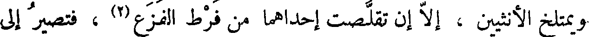
ويمتلخ الأنثيين ، إلا إن تقلصت إحداهما من فرط الفزع (2) ، فتصير إلى
File: 000332.gt.txt (if the image is defective, simply delete all Arabic text and the line will be excluded)
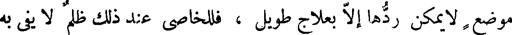
موضع لا يمكن ردها إلا بعلاج طويل ، فللخاصي عند ذلك ظلم لا يفي به
File: 000333.gt.txt (if the image is defective, simply delete all Arabic text and the line will be excluded)
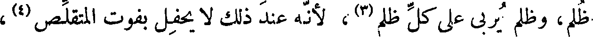
ظلم، وظلم يربي على كل ظلم(3) ، لأنه عند ذلك لا يحفل بفوت المتقلص (4) ،
File: 000334.gt.txt (if the image is defective, simply delete all Arabic text and the line will be excluded)
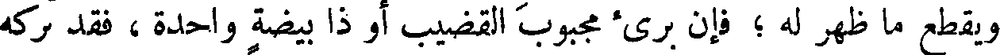
ويقطع ما ظهر له ؛ فإن برئ مجبوب القضيب أو ذا بيضة واحدة ، فقد تركه
File: 000335.gt.txt (if the image is defective, simply delete all Arabic text and the line will be excluded)
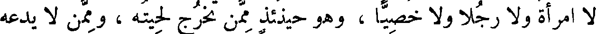
لا امرأة ولا رجلا ولا خصيا ، وهو حينئذ ممن تخرج لحيته ، وممن لا يدعه
File: 000336.gt.txt (if the image is defective, simply delete all Arabic text and the line will be excluded)
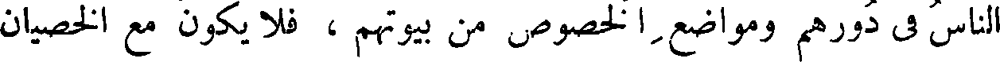
الناس في دورهم ومواضع الخصوص من بيوتهم ، فلا يكون مع الخصيان
File: 000337.gt.txt (if the image is defective, simply delete all Arabic text and the line will be excluded)
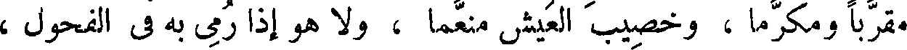
مقربا ومكرما ، وخصيب العيش منعما ، ولا هو إذا رمي به في الفحول ،
File: 000338.gt.txt (if the image is defective, simply delete all Arabic text and the line will be excluded)
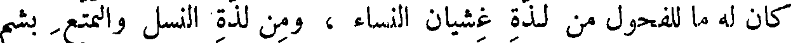
كان له ما للفحول من لذة غشيان النساء ، ومن لذة النسل والتمتع بشم
File: 000339.gt.txt (if the image is defective, simply delete all Arabic text and the line will be excluded)
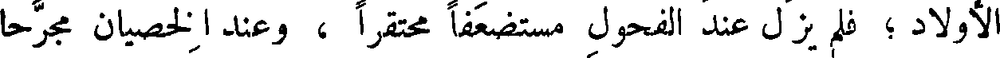
الأولاد ؛ فلم يزل عند الفحول مستضعفا محتقرا ، وعند الخصيان مجرحا
File: 000340.gt.txt (if the image is defective, simply delete all Arabic text and the line will be excluded)
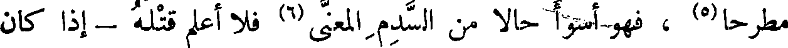
مطرحا(5) ، فهو أسوأ حالا من السدم المعنى(6) فلا أعلم قتله - إذا كان
File: 000341.gt.txt (if the image is defective, simply delete all Arabic text and the line will be excluded)
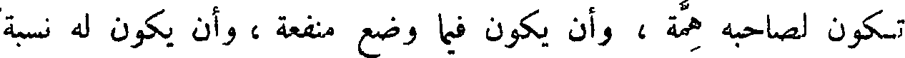
تكون لصاحبه همة ، وأن يكون فيما وضع منفعة ، وأن يكون له نسبة
File: 000342.gt.txt (if the image is defective, simply delete all Arabic text and the line will be excluded)
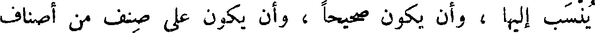
ينسب إليها ، وأن يكون صحيحا ، وأن يكون على صنف من أصناف
File: 000343.gt.txt (if the image is defective, simply delete all Arabic text and the line will be excluded)
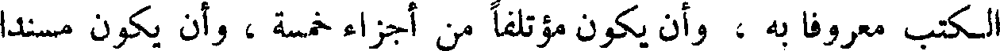
الكتب معروفا به ، وأن يكون مؤتلفا من أجزاء خمسة ، وأن يكون مسندا
File: 000344.gt.txt (if the image is defective, simply delete all Arabic text and the line will be excluded)
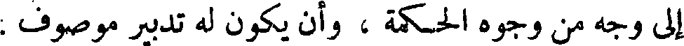
إلى وجه من وجوه الحكمة ، وأن يكون له تدبير موصوف .
File: 000345.gt.txt (if the image is defective, simply delete all Arabic text and the line will be excluded)
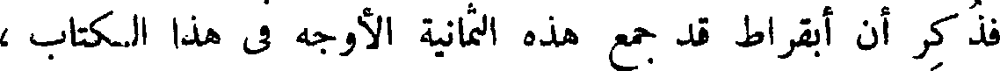
فذكر أن أبقراط قد جمع هذه الثمانية الأوجه في هذا الكتاب،
File: 000346.gt.txt (if the image is defective, simply delete all Arabic text and the line will be excluded)
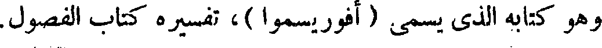
وهو كتابه الذي يسمى ( أفوريسموا )، تفسيره كتاب الفصول.
File: 000347.gt.txt (if the image is defective, simply delete all Arabic text and the line will be excluded)
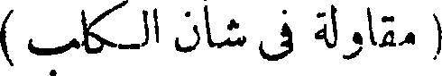
( مقاولة في شان الكلب )
File: 000348.gt.txt (if the image is defective, simply delete all Arabic text and the line will be excluded)
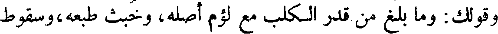
وقولك : وما بلغ من قدر الكلب مع لؤم أصله، وخبث طبعه،وسقوط
File: 000349.gt.txt (if the image is defective, simply delete all Arabic text and the line will be excluded)
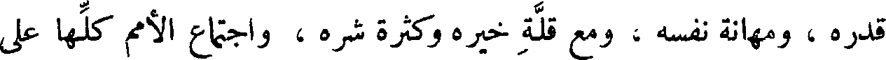
قدره ، ومهانة نفسه ، ومع قلة خيره وكثرة شره ، واجتماع الأمم كلها على
File: 000350.gt.txt (if the image is defective, simply delete all Arabic text and the line will be excluded)
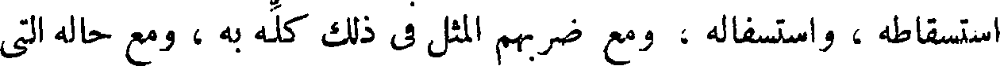
استسقاطه ، واستسفاله ، ومع ضربهم المثل في ذلك كله به ، ومع حاله التي
File: 000351.gt.txt (if the image is defective, simply delete all Arabic text and the line will be excluded)
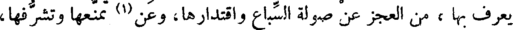
يعرف بها ، ومن العجز عن صولة السباع واقتدارها، وعن(1) تمنعها وتشرفها،
File: 000352.gt.txt (if the image is defective, simply delete all Arabic text and the line will be excluded)
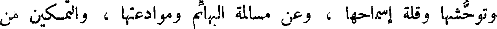
وتوحشها وقلة إسماحها ، وعن مسالمة البهائم وموادعتها ، والتمكين من
File: 000353.gt.txt (if the image is defective, simply delete all Arabic text and the line will be excluded)
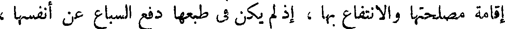
إقامة مصلحتها والانتفاع بها ، إذ لم يكن في طبعها دفع السباع عن أنفسها ،
File: 000354.gt.txt (if the image is defective, simply delete all Arabic text and the line will be excluded)
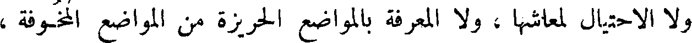
ولا الاحتيال لمعاشها ، ولا المعرفة بالمواضع الحريزة من المواضع المخوفة ،
File: 000355.gt.txt (if the image is defective, simply delete all Arabic text and the line will be excluded)
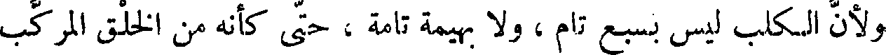
ولأن الكلب ليس بسبع تام ، ولا بهيمة تامة ، حتى كأنه من الخلق المركب
File: 000356.gt.txt (if the image is defective, simply delete all Arabic text and the line will be excluded)
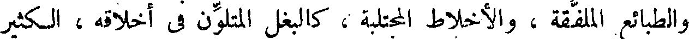
والطبائع الملفقة ، والأخلاط المجتلبة ، كالبغل المتلون في أخلاقه ، الكثير
File: 000357.gt.txt (if the image is defective, simply delete all Arabic text and the line will be excluded)
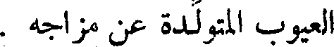
العيوب المتولدة عن مزاجه .
File: 000358.gt.txt (if the image is defective, simply delete all Arabic text and the line will be excluded)
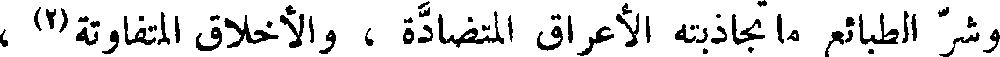
وشر الطبائع ما تجاذبته الأعراق المتضادة ، والأخلاق المتفاوتة(2) ،
File: 000359.gt.txt (if the image is defective, simply delete all Arabic text and the line will be excluded)
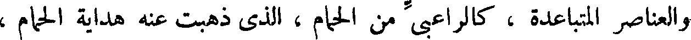
والعناصر المتباعدة ، كالراعبي من الحمام، الذي ذهبت عنه هداية الحمام ،
To Save: `Ctrl+s`, make sure to choose `Webpage, complete`!